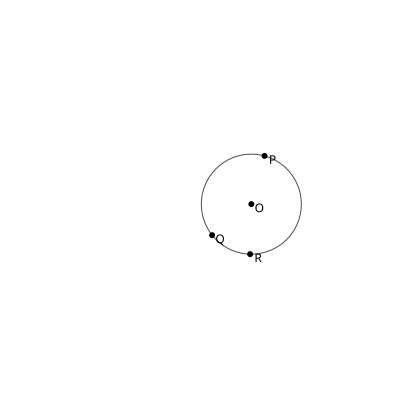

Step 6: 06-Y
Points: O, R, P, Q, M, A, B, C, D, X, Y
Constraints: Collinear(Y, P, Q), Collinear(Y, B, C)

Points: O, R, P, Q
Constraints: OnCircle(P, O, R), OnCircle(Q, O, R)

Points: O, R, P, Q, M
Constraints: Midpoint(M, P, Q)
Points: O, R, P, Q, M, A, B
Constraints: OnCircle(A, O, R), Between(A, M, B), OnCircle(B, O, R)
Points: O, R, P, Q, M, A, B, C, D
Constraints: OnCircle(C, O, R), Between(C, M, D), OnCircle(D, O, R)
Points: O, R, P, Q, M, A, B, C, D, X
Constraints: Collinear(X, P, Q), Collinear(X, A, D)
Points: O, R, P, Q, M, A, B, C, D, X, Y
Constraints: Collinear(Y, P, Q), Collinear(Y, B, C)
Points: O, R, P, Q, M, A, B, C, D, X, Y
Constraints: Goal_Midpoint(M, X, Y)